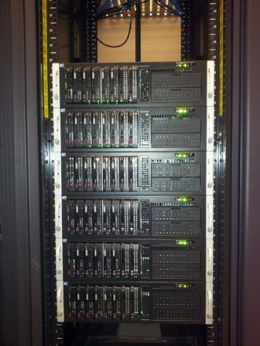
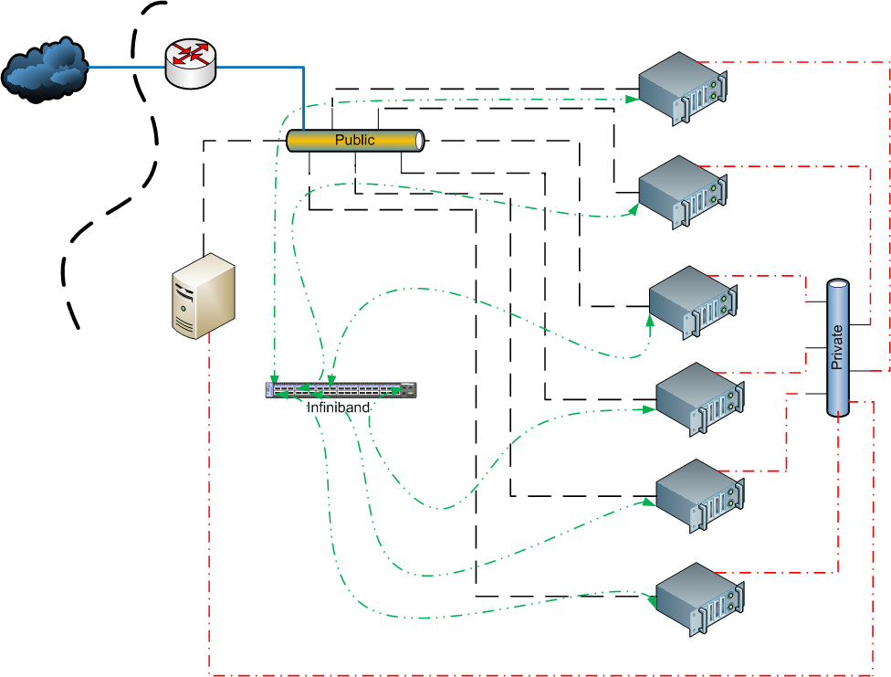
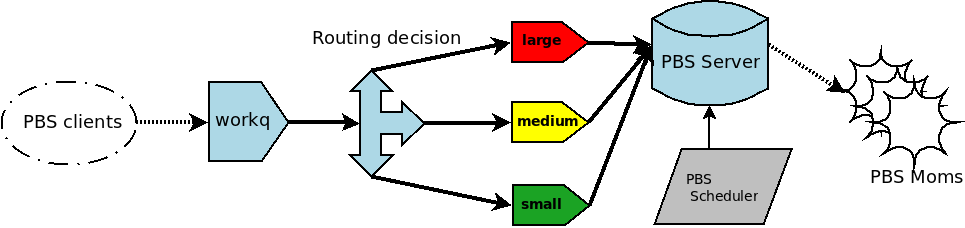

Pleiades
A Data-Intensive HPC Cluster
Pleiades -- the Seven Sisters, or Messier object 45 (aka M45).
Pleiades HPC Cluster
- 6x Compute Nodes
- 1x Head Node
- 1x Storage Node
Located at ICRAR Fairway -- managed by ICRAR ICT 
6x Compute Nodes
- Number crunching servers
- Lots of RAM and CPU cores
- NVIDIA Tesla GPUs (Fermi)
Compute Hardware
- 2x Intel Xeon X5650 2.66GHz 6-Core CPUs
- 96GB DDR3 ECC RAM
- One node:192GB DDR3 ECC RAM
- 1x NVIDIA GF100 Tesla C2070
- One node:2x NVIDIA GF100 Tesla C2070
- 1x Mellanox QDR Infiniband 40Gbps
1x Head Node
- Access point to the cluster
- Development and compilation environment
- Pivot of the scheduling system
1x Storage Node
- Reliable Storage for
/home - Shared with other ICRAR systems
Network Configuration
Cluster Status
Authentication
- Common LDAP User Accounts
- Public-Key Secure Shell Access
Common LDAP User Accounts
- Same account as dirp01
- Accounts already exists, no need to ask for creation
- Access to the scheduling queue MUST BE requested
Public-Key Access
- Available throughout the cluster
- Key pairs to be generated during first use
- Torque/PBS relies on SSH keys
File Systems
/home- NFS4 share on top of a RAID6 device (quota enforced)
/scratch- High performance filesystem as a staging area (no HA)
/mnt/science- NFS4 already in use on dirp01 (no HA)
Using Pleiades
Submitting Jobs
Resource Management
- Scheduling System
- Manages Jobs
- Allocates Resources
PBS / Torque
Queue allocation based on requested resources
 More CPU cores means less walltimeJob Script
#PBS -l nodes=1:ppn=1
#PBS -o hello_echo.out
#PBS -e hello_echo.err
/bin/echo "HELLO! from $HOSTNAME!"
hello_echo.pbs
Job Submission
[me@pleiades ~]$ qsub hello_echo.pbs
1234.pleiades.icrar.org
submit hello_echo.pbs
Job Output
[me@pleiades ~]$ cat hello_echo.out
HELLO from pleiades01.icrar.org!
cat hello_echo.out
Resource Requests
[me@pleiades ~]$ qsub -l nodes=6:ppn=12 sleep.pbs
1024.pleiades.icrar.org
run on 6 nodes with 12 processes per node
Job Monitoring
[me@pleiades ~]$ qstat
Job id Name User Time Use S Queue
------------------------- ---------------- --------------- -------- - -----
1024.pleiades sleep.pbs me 0 Q large
job was routed to the large queue and is pending
Cluster Documentation
Questions
Feel free to contact ICRAR ICT for additional information